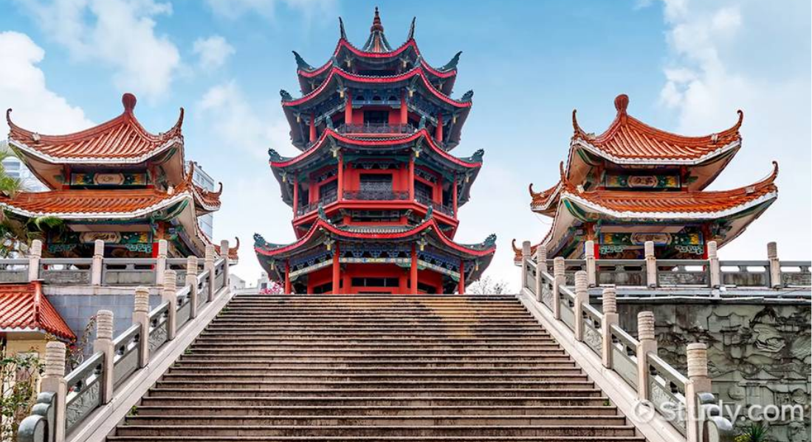
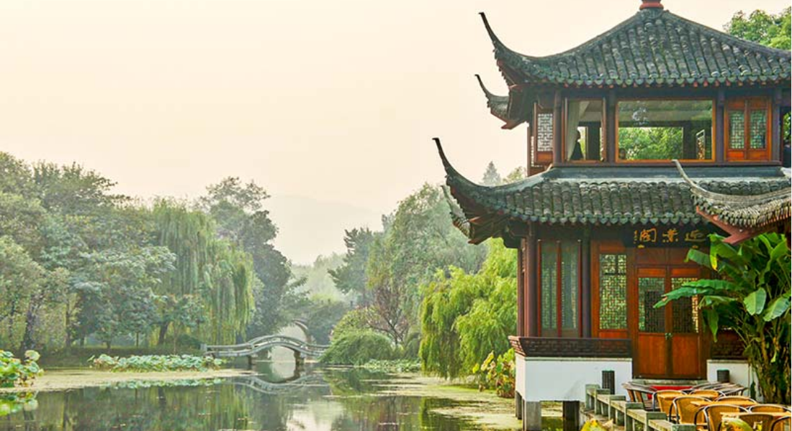

Step into White Lotus Cafe, where tradition meets modern sophistication. Inspired by the delicate balance of nature and flavor, we bring you an unforgettable dining experience filled with aromatic teas, handcrafted coffees, and exquisite oriental dishes. Whether you're here for a quiet afternoon tea, a hearty meal, or a refined cocktail at our sit-down bar, we invite you to savor every moment.
At White Lotus Cafe, we invite you to experience the beauty of Chinese tea culture, the warmth of authentic flavors, and the joy of shared moments. Join us for a cup of tranquility, a plate of tradition, and a celebration of life's simple pleasures.
At White Lotus Café, we believe that every meal is an opportunity to experience culture, tradition, and artistry. Inspired by the rich culinary heritage of China, our café brings together the best flavors from the four renowned culinary regions—Shandong, Sichuan, Jiangsu, and Guangdong—to create an unforgettable dining experience. Our philosophy is simple: authenticity, quality, and warmth. We use carefully selected ingredients, time-honored techniques, and an artistic touch to craft each dish with the same care and dedication found in traditional Chinese kitchens. From the bold spices of Sichuan to the refined elegance of Jiangsu, our menu reflects the diverse and exquisite flavors of China, allowing guests to explore the country's culinary history through every bite.
China’s food culture is as vast as its landscapes, with each region boasting its own unique flavors and cooking techniques. At White Lotus Café, we pay homage to these regional specialties by offering dishes that highlight the best of each province. Shandong cuisine brings robust, savory flavors with its mastery of seafood and braised dishes. Sichuan cuisine ignites the senses with bold spices and numbing Sichuan peppercorns. Jiangsu cuisine, known for its refinement, offers delicate flavors and meticulous presentation. Lastly, Guangdong cuisine, famous for its fresh ingredients and mastery of dim sum, delivers a comforting and familiar taste loved worldwide. We take pride in using only the finest ingredients, sourced to maintain the integrity of traditional Chinese cooking while embracing modern culinary advancements. Every dish tells a story—of heritage, of passion, and of a commitment to excellence.

White Lotus Café is more than just a restaurant—it is a sanctuary where guests can immerse themselves in the rich traditions of Chinese culture. Our space is designed to offer a harmonious blend of elegance and warmth, with serene aesthetics inspired by Chinese tea houses and classical architecture. Whether you are gathering with loved ones for a celebration, enjoying a quiet afternoon with a fragrant cup of tea, or indulging in a thoughtfully prepared meal, our café is a place to relax, connect, and savor life’s moments.

We believe that true hospitality is about more than just serving great food—it is about creating meaningful experiences. Our team is dedicated to providing attentive, welcoming service, ensuring that every guest feels at home from the moment they step through our doors. Whether you are a seasoned connoisseur of Chinese cuisine or exploring it for the first time, we are here to guide you on a journey of discovery and delight. At White Lotus Café, we invite you to step into a world where tradition meets modernity, where flavors tell a story, and where every visit is a celebration of culture and connection.